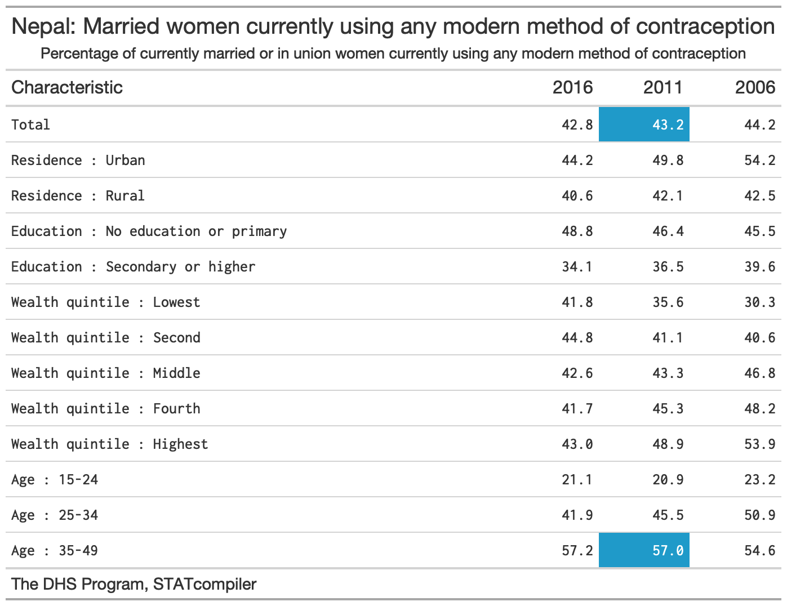
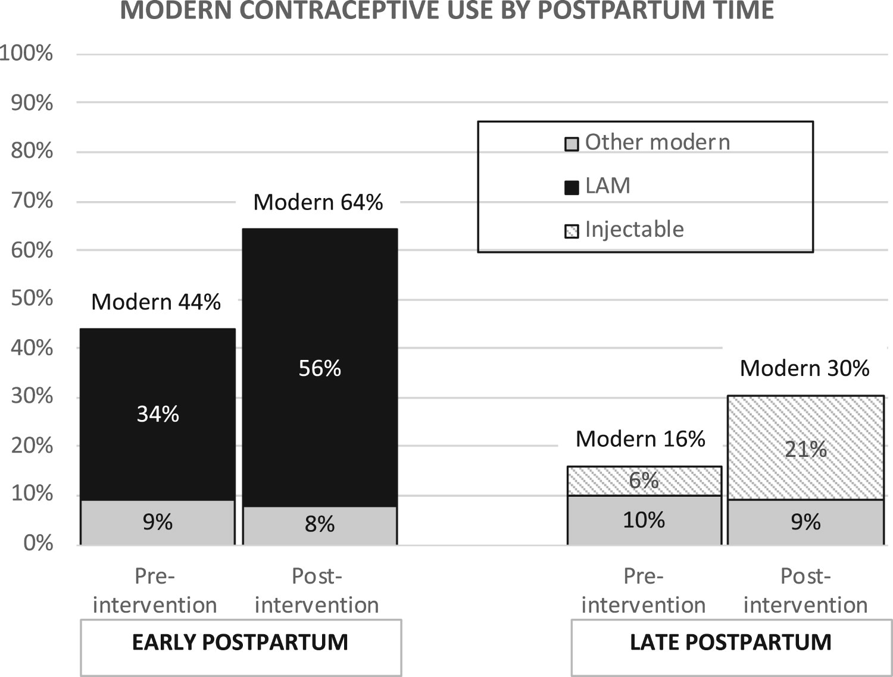
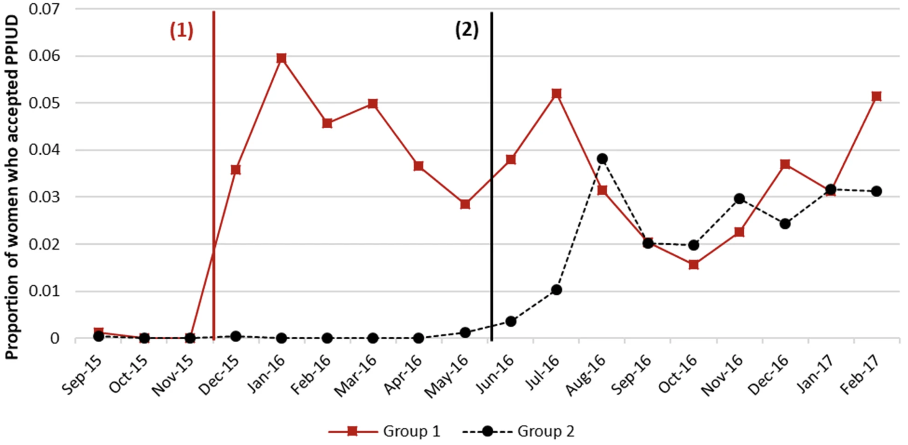

3 Develop Research Ideas and Questions
Actual footage of my first research meeting in grad school, via GIPHY.
In my experience as a mentor and former student, one of the most anxiety-producing moments in student life is when a new mentor says, “tell me about your ideas”. Why is this innocent prompt so terrifying? It might be because we have the wrong understanding of the origin of good ideas.
In his book Where Do Good Ideas Come From?, Steven Johnson argues that good ideas are usually not eureka moments as we tend to imagine. Instead, good ideas are often the product of fertile environments where ideas are allowed to “connect, fuse, and recombine” over time.
Two of Johnson’s insights are particularly relevant for us: the notion of the slow hunch and the adjacent possible. These concepts help to explain why generating research ideas can be so hard, especially for students.
Watch Steven Johnson talk about Where Good Ideas Come From.
First, the student timeline is often hostile to innovation. Learning and assignments are compressed into semesters, but many ideas need more time to take shape. As Johnson writes:
Most great ideas first take shape in a partial, incomplete form. They have the seeds of something profound, but they lack a key element that can turn the hunch into something truly powerful…They start with a vague, hard-to-describe sense that there’s an interesting solution to a problem that hasn’t yet been proposed, and they linger in the shadows of the mind, sometimes for decades, assembling new connections and gaining strength.
Ideas take time to develop. This is the slow hunch concept. “But I have a research meeting with my mentor next Tuesday and she wants a list of ideas!!”, you say. Breathe, don’t panic. When you recognize that good ideas come from the accumulation of slow hunches, you will learn to enjoy the process. Your first idea will be the start of your journey, not the end. Your best ideas might not conform to this semester’s schedule, and that is OK.
The second insight is that we’re always sitting on the edge of a breakthrough, but we need access to certain raw materials to unlock this discovery. This is the adjacent possible concept, which Johnson describes as follows:
Searching for the adjacent possible the night before your paper is due, via GIPHY.
Think of [the adjacent possible] as a house that magically expands with each door you open. You begin in a room with four doors, each leading to a new room that you haven’t visited yet. Those four rooms are the adjacent possible. But once you open one of those doors and stroll into that room, three new doors appear, each leading to a brand-new room that you couldn’t have reached from your original starting point. Keep opening new doors and eventually you’ll have built a palace.
Johnson borrows the metaphor of the adjacent possible from theoretical biologist Stuart Kauffman to illustrate the importance of connecting ideas.
The first room is a metaphor for your initial understanding of a new topic. It’s pretty empty because you are new, but your room has many potential doors to open—many lines of research to explore. When you open one door by searching the literature—and by connecting with other colleagues at talks, conferences, meet-ups—more doors appear. Figuring out which doors to walk through (and which ones to close) is a skill that comes with practice. Many literature searches can lead to apparent dead ends, but with each door you open, new hunches form. And when you have opened enough doors:
…one day [your hunches] are transformed into something more substantial: sometimes jolted out by some newly discovered trove of information, or by another hunch lingering in another mind, or by an internal association that finally completes the thought.
3.1 Find a Research Problem
Every study begins with a motivating research problem. A research problem is your study’s ikigai, its “reason for being”, to borrow a Japanese concept. A research problem should convey a clear reason for being, a clear sense of purpose. Typically, a research problem gets framed as the gap in our knowledge—a gap in the literature.
A defining characteristic of all research problems is that they are potentially solvable (Leary, 2012). To qualify as a research problem, we must be able to use systematic, public methods to gather and analyze data on the problem. For instance, research has shown that insecticide treated bed nets can prevent malaria infections in kids, but in many places kids are not sleeping underneath bed nets every night. Therefore, a research problem to solve might be that we don’t know how to encourage families to adopt and use this effective method of prevention.
Finding research problems worth studying becomes easier with experience. Once you’ve studied a field for a few years, you’ll have cultivated a list of journals, conferences, funders, and colleagues whom you follow to keep up with the latest developments and priorities. As you read and learn, it’ll become easier to spot important gaps that you can help to fill. Likewise, if you’re a practitioner or a policy-maker, your accumulated daily observations will generate ideas.
But let’s assume that this does not describe you today. So where do YOU start?
Students often come to me with a general awareness about a health challenge, not a specific problem or research idea. “I’m interested in mental health”, they’ll say. For students at this early stage of training, I usually encourage them to adopt someone else’s research problem and jump into an ongoing project to gain experience, rather than develop an independent project.
Aside from soaking in experience, there are also steps you can take to expose yourself to new ideas:
- Read the health and science sections of major news publications and set alerts for topics you find interesting
- Look up the national and international professional associations for your research area and subscribe to their mailing lists
- Attend research talks in-person or via online webinars hosted by universities, global health research organizations, or professional associations
- Follow experts active on social media
- Network with local practitioners and policy-makers who have a front row seat to applied challenges and gaps in our knowledge
Not sure what journals to search? Check out Google Scholar’s Top Publications feature.
Above all else, start reading the scientific literature. A useful strategy for finding reading material is to visit the websites of the most popular journals in your discipline and browse recent issues. Once you find a few articles of interest, try the following strategy for expanding your search and identifying gaps in the literature worth studying:
- Find the keywords: An article’s keywords often make great search terms. Look near the abstract.
- Read the Introduction: A good Introduction will frame gaps in our knowledge of a topic, so pull out a highlighter and get to work.
- Review the Discussion: The Discussion section may also hold new leads. Authors typically use the Discussion to link their study results to the existing literature to demonstrate how the results add to what is already known. A good Discussion section will also include limitations of the current study and might offer ideas for future research.
- Take note of the cited authors and journals: The Reference section holds clues to your next great find. Tools like Google Scholar let you search for these references and discover where else these citations appear.
Once you start looking, you’ll find research problems everywhere. Your next challenge will be deciding where to direct your attention and energy. I encourage you to favor problems that meet the following criteria:
- Important to you
- Contribute to your field
- Meaningful to society
- Potentially solvable using systematic, public methods (discussed above)
First, the quality of your work will be better if you believe you are working on something interesting and important. Research projects in global health can have a long life-cycle with ups and downs. A genuine interest in solving the problem can help you get through the low points.
Second, when selecting a research problem for study, you should seek to understand from the outset how the answers will contribute to your field. Will your study provide an initial answer to a known problem? Clarify an issue marked by contradictory findings? Support an evolving consensus or provide an important counterpoint to a previously held view? Bring attention to an overlooked issue or apply cross-disciplinary learning to help scholars in your field think differently about a problem? Knowing your study’s purpose will help you to frame your contribution.
Not everyone will agree on the the third criterion, importance to society. There are many areas in research, especially in the basic sciences, where you can engage in scientifically important work without knowing if or how that work might benefit society one day. I believe global health is different. There are almost endless applied problems to solve, and you can’t work on all of them. Therefore, in asking to you find problems that are meaningful to society, I’m really suggesting that you be intentional. You’ll make many decisions over your career—decisions about training programs, mentors, grant opportunities, collaborators—and each decision has an opportunity cost. Some research problems won’t be a good use of your time and talent (ask me how I know), and we need both to solve big problems. When deciding to pursue new work, stop and ask yourself, “How are we better off if we solve this problem?”
3.2 Consider Your Contribution to Theory
todo Contribute to your field
3.3 Identify Your Learning Goal
Studies typically seek to describe, explain, or predict. It’s important to understand which goal you are pursuing with your work before you can ask a focused research question and design a study.
DESCRIBE
Every study uses an element of description. Let’s say you recruit a sample of 100 people who suffer from the same disorder and conduct a trial to estimate the effect of a new drug on some clinical outcome. When you summarize what you know about these 100 people at the time they were recruited, for instance the average age of the group, you’re describing your sample. Descriptive summaries appear in nearly every research article, usually as ‘Table 1’. But we must distinguish between the use of descriptive statistics—e.g., what is the mean age of these 100 people, the sample—and descriptive research questions.
Description is important in every discipline, but possibly no more so than in epidemiology. Epidemiologists ask descriptive research questions about people, place, and time. Fox and colleagues define descriptive epidemiology as follows (Fox et al., 2022):
Who is affected (People)? Where are cases rising and falling (Place)? How are rates changing over time (Time)?
Descriptive epidemiology seeks to characterize the distributions of health, disease, and harmful or beneficial exposures in a well-defined population as they exist, including any meaningful differences in distribution, and whether that distribution is changing over time
Let’s break down this definition.
Descriptive epidemiology seeks to characterize the distributions of health, disease, and harmful or beneficial exposures…
To “characterize the distribution” of something means to describe how often it occurs. The focus of descriptive studies is frequently a health status (often referred to as an outcome), like cancer, or potential exposures, such as environmental carcinogens. But description extends to knowledge, attitudes, practices—what people know, think, and do. For instance, a study might ask, “What percentage of women of reproductive age in Nepal use a modern method of contraception?”
Descriptive epidemiology seeks to characterize the distributions of health, disease, and harmful or beneficial exposures in a well-defined population as they exist
‘as they exist’ alludes to the notion that if your goal is description, statistical adjustment for confounding might be unnecessary or worse. You likely just want to quantify what you know about a particular group.
To ask a good descriptive research question, you must be clear about who makes up your group of interest, or your target population. I expand on this idea in a later chapter on sampling, so for now I’ll simply say that your target population is often a specific group, such as women of reproductive age in Nepal. Typically you’ll recruit a sample of individuals from this group and use the data you collect to make an inference from this limited sample to the larger group—your target population.
Descriptive epidemiology seeks to characterize the distributions of health, disease, and harmful or beneficial exposures in a well-defined population as they exist, including any meaningful differences in distribution, and whether that distribution is changing over time
Demography is another field that leans hard into description, often focusing on describing trends in births, deaths, marriage, employment, education, and migration.
There are often theoretical or programmatic reasons to quantify variation, or differences, in an outcome or exposure across subgroups (people), geographies (place), and time. For instance, you might want to stratify an analysis by ethnicity and race to quantify disparities in outcomes or in access to services. Doing this over time tells you whether conditions are improving, worsening, or staying the same.
Here’s an example to tie it all together. The descriptive research question is, “What percentage of women of reproductive age in Nepal use a modern method of contraception?”
‘Modern’ methods, such as condoms, implants, pills, are distinguished from (and are more effective than) ‘traditional’ methods, such as withdrawal and the rhythm method.
The Demographic and Health Surveys (DHS) Program has answered this question—and many others!—in more than 90 countries by designing, conducting, and analyzing large, nationally representative surveys on population, health, HIV, and nutrition. For instance, in 2011 DHS researchers surveyed a random sample of 10,826 households across Nepal and interviewed 12,674 women between the ages of 15 and 49 about their health behaviors and preferences (Ministry of Health and Population et al., 2011). They estimated that 43% of married women reported using some modern method of contraception. Stratified by age, modern method use was twice as common among married women ages 35 to 49 compared to married women ages 15 to 24 (see Figure 3.1).

EXPLAIN
Description is essential to science and decision-making related to needs and resources. The result from Nepal suggests that more than half of married women of reproductive age were not using a modern method of contraception in 2010. This is a very useful thing to know if you work for the Ministry of Health and are concerned about promoting reproductive health.
But you probably also want to go the next step and ask, “Why is uptake relatively low among younger women?”, and “What happens if we introduce a new policy or program intended to promote contraceptive use?”. Can we explain patterns of modern method use?
Qualitative Inquiry
One way to explore a “why” question is simply to ask people. That’s what Navin Bhatt and colleagues did in Nepal to better understand the reasons for low use of modern methods of contraception among young people (Bhatt et al., 2021). The research team organized six group discussions and conducted 25 interviews with a diverse mix of informants from one village, including teachers, youths, health workers, religious leaders, and government officials. One woman explained her non-use this way:
My husband works abroad. Last year, when he came home during Dashain (festival), we had (intercourse). Later, he returned to his workplace. Meanwhile, I came to know that I was pregnant, after 3 months. I was shocked to hear that. We already had 3 children; 2 of them were unplanned. I did not have enough information about contraceptive measures in this situation. Had I known about them; I would have used them. —Female, 24 years old
The authors analyzed transcripts with passages like this and reported that young people face numerous barriers to initiating family planning, including a lack of awareness as described by this woman. They concluded the article with several ideas for designing new interventions (programs) to promote modern method use among this group. We’ll return to qualitative methods of data collection and analysis in a future chapter.
Causal Inference
Another common method for exploring “why” and “what if” questions is explanatory modeling, or the use of statistical models for testing causal explanations (Shmueli, 2010). This work also falls under the label of causal inference, or what Gelman et al. (2020) define as follows:
what would happen to an outcome y as a result of a treatment, intervention, or exposure z, given pre-treatment information x.
Sometimes researchers ask these questions in the context of an experiment that features random assignment to conditions and some active introduction of the treatment, intervention, or exposure. But as Shmueli explains, most often research in the social sciences tests or quantifies associations between variables in non-experimental data.
Let’s consider two examples of the type of causal inference that we’ll examine in later chapters. Both examples come from Nepal and feature the issue of modern method use.
In our first example, Wu et al. (2020) looked at the prevalence of modern contraceptive use in a rural municipality in one of Nepal’s poorest districts before and after a pilot program called Nyaya Health Nepal was implemented. In this program, community health workers conducted home visits with pregnant women and new mothers and offered them contraceptive counseling. The authors reported that modern method use increased from 29% pre-intervention to 46% post-intervention (see Figure 3.2). But as we’ll discuss, this non-experimental design requires some strong assumptions for attributing the observed change to this program.

In our second example, Pradhan et al. (2019) used a stepped-wedge design to estimate the causal effect of offering postpartum family planning counseling on the proportion of new moms who opt to have an IUD inserted following childbirth. In this design, which you’ll meet more formally in a later chapter, the counseling intervention was turned on in six hospitals in a stepwise fashion. The three hospitals randomly assigned to Group 1 received the intervention first in a staggered start. Approximately six months later, the remaining hospitals began offering the counseling intervention, one after the other. Figure 3.3 demonstrates that rates of uptake appeared to jump in each group after the intervention was introduced. The authors estimated that the intervention increased IUD uptake by 4.4 percentage points [95%CI: 2.8–6.4 pp].

PREDICT
The third common learning goal is to use data and algorithms to predict new or future observations (Shmueli, 2010). You might know this as the domain of artificial intelligence, machine learning, or deep learning, but I’ll stick with the more general term of prediction modeling.
Funding for prediction modeling in medicine has exploded in the last decade. Data scientists who might have once worked hard for incremental gains in the quality of Netflix’s movie recommendations are now searching for ways to teach computers to outperform radiologists in detecting pathology. And increasingly, the same tools are being applied to solving public health challenges. The COVID-19 pandemic offers numerous examples.
For instance, organizations like the Institute for Health Metrics and Evaluation, or IHME, raced to forecast cases, hospitalizations, and deaths in the early days of the pandemic (IHME, n.d.). Hundreds of other teams developed models for predicting who was most at risk for developing COVID-19 or for predicting the prognosis of COVID-19 patients. This interest in solving applied problems is encouraging, but according to the authors of a massive ‘living’ systematic review of these models (updated through 2022), there is a lot of room for improvement before the next pandemic (Wynants et al., 2020):
Prediction models for COVID-19 entered the academic literature to support medical decision making at unprecedented speed and in large numbers. Most published prediction model studies were poorly reported and at high risk of bias such that their reported predictive performances are probably optimistic.
Returning to the topic of contraception, prediction models might help us to address a key public health challenge: more than 1 in 3 women in low- and middle-income countries stop using contraception within 12 months of starting, putting them at risk for unintended and mistimed pregnancies. What if there was a way to accurately predict who would eventually discontinue and offer them additional support when starting a new method of contraception?
Rothschild et al. (2020) took on this question, recruiting a cohort of more than 700 Kenyan women who did not want to get pregnant and following up with them over the course of 24 weeks to see who remained on a method and who stopped. The authors used data from 75% of the women to develop a discontinuation risk score (based on things like method choice, education, marital status) and reserved the remaining 25% to validate their new tool. The authors found that discontinuation was almost 2-6 times higher among women labeled as high risk vs low risk, but the positive predictive value of the score was only 31%. This means that most women labeled by the tool as “high risk” did not actually discontinue. In practice, mislabeling women as high risk for discontinuation would be unlikely to cause harm, but it could direct scarce resources to people who don’t need additional support.
By splitting the sample 75/25, the authors separated model development and model validation. This is a key idea in prediction modeling: testing your model on unseen data.
These examples are evidence that there is a great opportunity for public health-minded data scientists to make substantial contributions to the development, validation, and implementation of prediction models to improve lives and support health systems.
3.4 Specify a Research Question
A good research question addresses a research problem—a gap in our knowledge—and is answerable. ‘Answerable’ does not mean easy to answer, just possible to answer (Leary, 2012). The question, “Do mosquitoes have an afterlife?”, represents a gap in our knowledge, but we don’t have any empirical means for finding an answer. It’s an interesting question to pose to my kids to probe their imagination, but it’s a poor research question because it’s not answerable.
Writing good research questions takes practice. Here are two acronyms to help you get started: FINER and PICO.
FINER
FINER stands for Feasible, Interesting, Novel, Ethical, and Relevant (Hulley et al., 2007).
Feasible: Some research questions will take a long time to answer, cost too much, require too many participants, demand skills or equipment that you do not have, or will be too complex to implement. A good research question is not just answerable, it’s feasible for YOU to answer it with the resources currently at your disposal.
Interesting: Research requires funding and effort. If you don’t ask a sufficiently interesting question, you won’t get funding. If you manage to get funding but lose interest in the question, you might not finish the work. Unlike some other domains, global health research tends to have long timelines, and it’s important to work on things you’ll find interesting over the long term.
Novel: Replication is an important part of science, but the majority of global health funding goes to research that asks new and interesting questions. Therefore, you should prioritize answering questions that fill a gap in our knowledge.
Ethical: Google’s motto used to be, “don’t be evil”. This is a minimum bar for research with human subjects. You have a responsibility to ensure that the questions you ask and the methods you employ in search of answers shield participants from harm.
Relevant: In addition to being interesting, a research question should also be relevant to science and society. The answer should move your field forward in some way. Making this determination requires a thorough review of the literature and conversations with senior colleagues.
PICO
PICO stands for Population, Intervention, Comparison, and Outcome (see Table 3.1). It’s a useful framework for asking clinical questions in particular, but it might not fit your use case.
You’ll also see references to PICOT with the addition of time.
Table 3.1: ?(caption)
| **P** | Patient, Population, or Problem |
| **I** | Intervention, Prognostic Factor, or Exposure |
| **C** | Comparison |
| **O** | Outcome |
P:
Let’s use PICO to develop a research question about the efficacy of mosquito bed nets in preventing malaria. The problem is malaria infections. The population is children under 5 years of age. Because intervention studies tend to be smaller in reach than nationally representative surveys, we might add “living around the Lake Victoria basin in Kenya”. The intervention is the application of an insecticide-treated net. The comparison group might be children living in families who are provided an untreated bed net.1 One outcome measure could be the rate of parasitaemia after the intervention.
We combine all of these elements into a single research question:
Among children under 5 years of age living around the Lake Victoria basin in Kenya, are insecticide-treated mosquito nets more effective than untreated nets at preventing parasitaemia?
Imagine that we wanted to study the uptake or use of bed nets. We could ask a descriptive research question like, “How many children sleep under bed nets?” It’s a good start, but this question is too general. Children of what age? Living where? We also need to define what we mean by sleeping under a bed net. In this line of research, it is common to ask about the previous night, as in the night before the survey.
A better way to phrase the question is, “What percentage of children under 5 years of age in Kenya slept under an insecticide treated net the previous night?” An example of an explanatory research question on the same topic is, “What are the correlates of insecticide treated net use among families with children under 5 years of age in Kenya?”
Both of these examples are FINER than the first one: Feasible, Interesting, Novel, Ethical, and Relevant (Hulley et al., 2007).
3.5 Develop a Hypothesis (Maybe)
todo
register generating
Prognostic factor refers to covariates that could influence the prognosis of the patient. An exposure would be something that we think might increase the risk of an outcome.↩︎